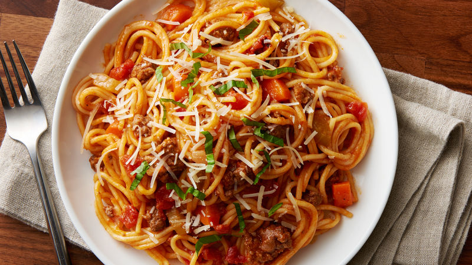
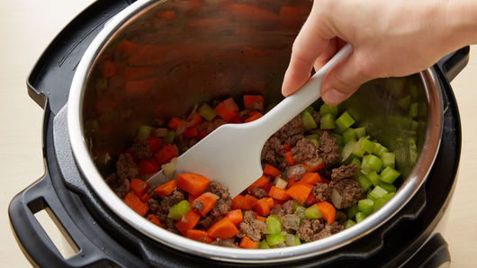
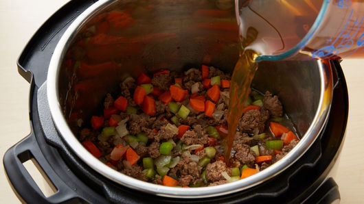
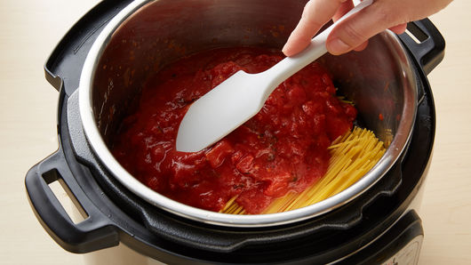
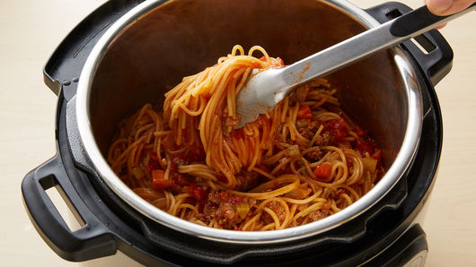

Spagetti Bolognese Recipe

Description
This is a perfect meal for a main course on a bright sunny day. This family-favorite pasta dinner just got
even easier! Deliciously meaty bolognese sauce and tender spaghetti noodles cook beautifully in the Instant Pot®
for a meal that's low on dishes and big on savory Italian flavors.
Ingredients
- 1 tablespoon olive oil
- 1 lb extra-lean (at least 90%) ground beef
- 2 cups chopped yellow onions
- 1/2 teaspoon salt
- 1 cup chopped celery
- cup chopped peeled carrots
- 2 cups beef broth
- 12 oz uncooked spaghetti, broken in half
- 1 can crushed tomatoes, undrained
Steps
- On 6-quart Instant Pot®, select SAUTE; adjust to normal. Heat oil in insert. Add beef, onions and salt;
cook 8 to 10 minutes, stirring occasionally, until thoroughly cooked. Stir in celery and carrots.
Select CANCEL.

- Stir broth into beef mixture.

- Add spaghetti evenly over beef mixture. Spread tomatoes evenly over spaghetti. Secure lid;
set pressure valve to SEALING. Select MANUAL; cook on high pressure 7 minutes. Select CANCEL.
Set pressure valve to VENTING to quick-release pressure.

- Using tongs, immediately lift, and stir mixture 1 to 2 minutes or until pasta is completely separated.
Spaghetti will appear to be stuck together but will separate while stirring.

Back